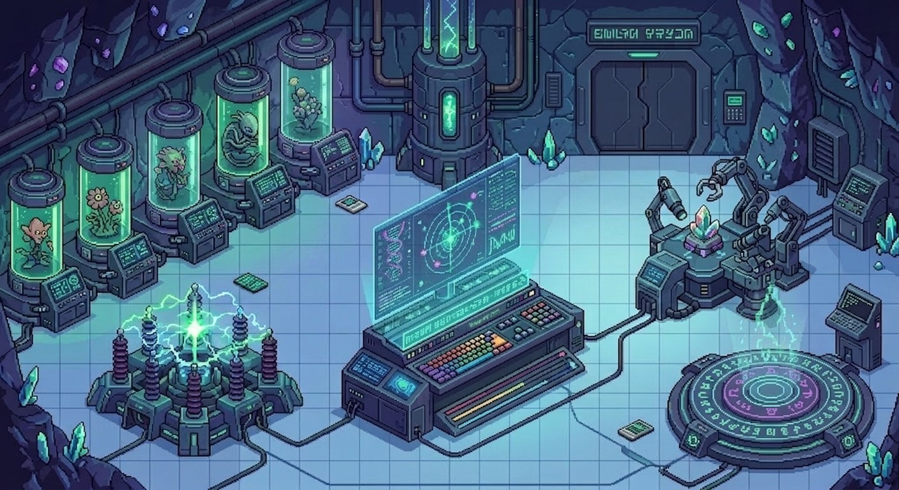

Quick-T Lab
v3.0 RPGGARDEN
🌿 GARDEN
24.8°C · 49% · VPD 1.59
ZORO — Orquestador
24.8°C · 49% · VPD 1.59
ZORO — Orquestador
ASISTENC-IA
🏭 ASISTENC-IA
24 presentes · ⚠ 1 alerta
Mr. Wong — Developer
24 presentes · ⚠ 1 alerta
Mr. Wong — Developer
FOOD
PRONTO
🍽️ FOOD
Cartas NFC + pedidos a cocina
Checho — Operaciones
Cartas NFC + pedidos a cocina
Checho — Operaciones
MÉTRICAS
PRONTO
📊 MÉTRICAS
KPIs globales Quick‑T
Dashboard — Global
KPIs globales Quick‑T
Dashboard — Global
ZORO